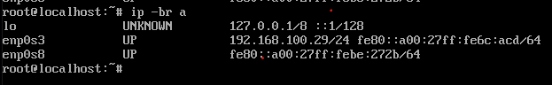
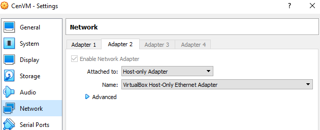

Сделал серверный контейнер и клиентскую виртуальную машину для продвинутых пользователей, для применения в случае серьезной цензуры интернета.
Образ маскирует интернет-трафик под скачивание почты с Gmail (протокол IMAP с шифрованием, TLS-запросы на imap.gmail.com, порт 993) по умолчанию, также есть режим маскировки под DNS-запросы на фиктивный домен int.loc, с прямым подключением к серверу по порту DNS 53. Почта и DNS — наиболее «живучие» протоколы, которые будут блокироваться в последнюю очередь.
Интернет из виртуальной машины можно раздать на все устройства внутри домашней сети (компьютеры, смартфоны, приставки). Для этого необходимо указать IP-адрес виртуальной машины в качестве шлюза и DNS-сервера. Устанавливать дополнительное ПО на конечных устройствах не требуется.
Файлы здесь:
ftp://serv.valdikss.org.ru/Downloads/Temp/cenvm-belarus/
Внимание! Клиентская виртуальная машина предназначена для временного использования в случае цензурирования интернета, в сети с домашним маршрутизатором. Она маршрутизирует весь трафик, в ней нет фильтров по интерфейсам или IP-диапазонам.
Для технически неподкованных пользователей, без опыта работы с Linux, рекомендуется использовать Outline, установив его на собственный сервер. Он гораздо проще в установке и использовании, но, с большой вероятностью, не сможет обеспечить доступ в интернет в случае введения действительно жесткой интернет-цензуры.
rootfs.tar.xz — системный серверный контейнер, может быть запущен в systemd-nspawn или LXD. Содержит Cloak, dnstt в качестве фронт-энда, v2ray в качестве бек-енда.
Экспортирует порты 53 (5300 в контейнере, нужно делать маппинг 53 → 5300, см. пример ниже) и 993.
Пример для systemd. Предварительно загрузить rootfs.tar.xz на сервер, далее выполнить:
apt -y install systemd-container
machinectl import-tar rootfs.tar.xz cen
mkdir -p /etc/systemd/nspawn/
echo -e "[Network]\nVirtualEthernet=yes\nPort=tcp:993\nPort=udp:53:5300\nPort=tcp:53:5300" > /etc/systemd/nspawn/cen.nspawn
systemctl enable --now systemd-networkd.service
machinectl enable cen
machinectl start cen
sleep 10
systemctl -M cen disable --now ferm
machinectl copy-from cen /root/cloak_adminuid.txt cloak_adminuid.txt
machinectl copy-from cen /root/cloak_pubkey.txt cloak_pubkey.txt
machinectl copy-from cen /root/dnstt-server.pub dnstt-server.pub
machinectl copy-from cen /root/v2ray_uuid.txt v2ray_uuid.txt
Дополнительная настройка не требуется.
CenVM.ova — клиентский образ виртуальной машины для VirtualBox и других систем виртуализации. Представляет собой программный маршрутизатор, который нужно запустить в виртуальной машине, настроить, и далее использовать IP-адрес виртуальной машины в качестве шлюза и DNS-сервера для всех необходимых устройств в домашней сети.
- Установите VirtualBox, скачайте и импортируйте образ CenVM.ova.
- Убедитесь, что в настройках виртуальной машины, во вкладке Network у Adapter 1 указан сетевой интерфейс, через который вы получаете интернет на компьютер, а у Adapter 2 указан внутренний сетевой интерфейс VirtualBox (host-only adapter).
- Запустите виртуальную машину.
- Войдите под именем
root, пароль1. - Скачайте файлы
cloak_adminuid.txt,cloak_pubkey.txt,dnstt-server.pub,v2ray_uuid.txtс удалённого сервера в директорию/root, например, с помощью sftp:
sftp root@1.2.3.4
get cloak_adminuid.txt
get cloak_pubkey.txt
get dnstt-server.pub
get v2ray_uuid.txt
- Пропишите IP-адрес сервера в файле
/usr/local/etc/config.sh, например, с помощью nano. - Перезагрузите виртуальную машину.
- Настройте компьютер на использование IP-адреса виртуальной машины в качестве шлюза и DNS-сервера. Посмотреть IP-адрес виртуальной машины можно командой
ip -br a, вам нужен адрес вида192.168.56.xxx.
По умолчанию виртуальная машина настроена на маскировку под imap.gmail.com, порт 993. Чтобы использовать маскировку под DNS, замените порт 6001 на 6002 в файле /usr/local/etc/v2ray.json.template и перезагрузите машину.
"outbounds": [{
"protocol": "vmess",
"settings": {
"vnext": [{
"address": "127.0.0.1",
"port": 6001, // ←←← ВОТ ЭТОТ
"users": [{ "id": "==UUID==", "alterId": 64 }],
"domainStrategy": "UseIP"
}]
}
}],
Запустил виртуалку - чёрный экран.
И ещё не совсем понятно, что нужно использовать: виртуалку И серверный контейнер либо виртуалку ИЛИ серверный контейнер
Нужно использовать и виртуалку (на компьютере, в качестве маршрутизатора-шлюза), и контейнер на сервере (в качестве выходного туннеля для виртуалки).
Настраивать виртуалку следует согласно инструкции в посте.
Помогите пожалуйста с 8 пунктом. Вроде был все предыдущие шаги выполнил, но ничего загрузить не могу. Ниже прилагаю скриншоты. Спасибо

Вот output с удаленного сервера

Убедитесь, что в настройках виртуальной машины установлен bridge (мост) на сетевой интерфейс в интернет (Wi-Fi-интерфейс в вашем случае).
В настройках Windows шлюз и DNS у Wi-Fi-интерфейса («беспроводная сеть») необходимо убрать (чтобы он вообще не использовался), а у Host-интерфейса (Virtualbox Host-Only network) установить и шлюз, и DNS, в IP-адрес виртуальной машины.
Думаю, что я ошибаюсь где-то в простом месте. Извините за беспокойство
Вот скриншот, а интернет отсутствует. Спасибо
UPD: Ошибка: DNS-сервер не отвечает.

Вы сделали сетевую петлю: указали TAP Adapter VPN’а в качестве интернет-канала для виртуальной машины, а на компьютере настроили интернет через виртуальную машину.
Сетевой пакет с компьютера идёт в виртуальную машину, она его маршрутизирует в TAP-адаптер, который пытается его отправить в VPN через виртуальную машину (т.к. весь интернет теперь через ВМ) и так до бесконечности.
Либо укажите Wi-Fi-адаптер, либо настраивайте маршрутизацию до VPN через правильный интерфейс, и т.п.
Новости сообщают о проблемах с интернетом в Беларуси.
Пользователи контейнера+виртуалки, пожалуйста, напишите, работает ли эта связка, и насколько хорошо.
Блокировка трафика осуществляется по протоколам TCP и UDP, трафик фильтруется на хопе:
# traceroute google.com --tcp
traceroute to google.com (172.217.20.206), 30 hops max, 60 byte packets
1 192.168.100.1 (192.168.100.1) 0.451 ms 0.630 ms 0.811 ms
2 100.125.128.1 (100.125.128.1) 3.703 ms 3.679 ms 3.857 ms
3 mm-57-80-84-93.dynamic.pppoe.mgts.by (93.84.80.57) 3.453 ms 3.795 ms 4.458 ms
4 172.23.2.29 (172.23.2.29) 6.021 ms 6.157 ms 6.151 ms
5 core1.net.belpak.by (93.85.80.45) 4.802 ms 5.337 ms 5.331 ms
6 ie2.net.belpak.by (93.85.80.42) 5.325 ms 7.748 ms 10.464 ms
7 asbr7.net.belpak.by (93.85.80.122) 3.261 ms 2.948 ms 3.391 ms
8 * * *
9 * * *
10 * * *
# traceroute google.com --icmp
traceroute to google.com (172.217.20.206), 30 hops max, 60 byte packets
1 192.168.100.1 (192.168.100.1) 0.794 ms 0.972 ms 1.152 ms
2 100.125.128.1 (100.125.128.1) 7.945 ms 8.293 ms 8.810 ms
3 mm-57-80-84-93.dynamic.pppoe.mgts.by (93.84.80.57) 3.617 ms 3.774 ms 3.766 ms
4 172.23.2.29 (172.23.2.29) 6.132 ms 6.270 ms 6.271 ms
5 core1.net.belpak.by (93.85.80.45) 4.095 ms 4.276 ms 12.026 ms
6 ie2.net.belpak.by (93.85.80.42) 11.151 ms 6.839 ms 6.821 ms
7 asbr7.net.belpak.by (93.85.80.122) 3.648 ms 3.989 ms 4.165 ms
8 209.85.148.70 (209.85.148.70) 30.560 ms 30.946 ms 31.114 ms
9 108.170.251.145 (108.170.251.145) 25.022 ms 25.018 ms 25.494 ms
10 108.170.228.9 (108.170.228.9) 31.204 ms 30.775 ms 31.151 ms
11 216.239.56.81 (216.239.56.81) 25.905 ms 26.088 ms 26.277 ms
12 108.170.250.209 (108.170.250.209) 29.602 ms 29.777 ms 29.773 ms
13 216.239.41.171 (216.239.41.171) 26.084 ms 25.534 ms 25.545 ms
14 waw02s08-in-f14.1e100.net (172.217.20.206) 25.394 ms 25.496 ms 25.437 ms
Соединение на IP-адрес google.com (172.217.20.206) не устанавливается: ответ на SYN-пакет не приходит.
Соединение до imap.gmail.com:993 успешно устанавливается.
Анализ пакетов осуществляется с помощью DPI. Часть соединений отбрасывается на этапе TLS-хендшейка, в частности, на нестандартных портах (3143).
Контейнер+виртуальная машина работают на mgts.by в полной мере.
Приветствую.
Решил поднять виртуалку. Споткнулся на п. 5. После отправи sftp root@1.2.3.4 выводится:
ssh: connect to host 1.2.3.4 port 22: Connection timed out
Соответственно, не могу выкачать файлы *.txt. Че делать?
Вместо 1.2.3.4 необходимо вписать IP-адрес сервера, на котором установлен контейнер.
Установил контейнер на сервер. Настроил клиентскую vm, но что-то пакеты идут только к серверу, ответов назад не вижу. Фаервол на сервере выключен. В контенере пишутся логи? и если да как их искать. Спасибо
Логи не настроены. Попробуйте воспользоваться tcpdump на порт 53 на стороне сервера, чтобы хотя бы проверить, что сервер действительно не отвечает.
Также не забудьте перезагрузить ВМ после скачивания файлов.
Режим с маскировкой под почту (тот, который по умолчанию) будет работать заметно быстрее.
вот tcpdump, странно что идут dns запросы хоть в конфиге v2ray стоит 6001 порт, клиенскую vm перезагружал
Это нормально, это поддержание сессии.
Захватите трафик на порту 993, посмотрите ответы.
tcpdump
wireshark
такой вопрос
у меня файла /usr/local/etc/v2ray.json.template по дефолту нет это окей или должен его создать?
medfgh на клиентской vm он должен быть
Бля, да, спасибо, глаз замылился уже
у тебя завелась тачка?
как ты балансировал что бы было 2 гейтвея на винде и один точно не работал с основной машины ?
Зайдите в сам контейнер командой machinectl shell cen, установите там tcpdump: apt update && apt install tcpdump, убедитесь, что процессы v2ray и ck-server-linux-amd64 запущены.
Это не требуется: просто уберите gateway у интернет-интерфейса. Виртуальная машина использует мост для подключения к интернет-интерфейсу, маршрутизатор ей выдаст отдельный адрес.
Мой пк мейн порт 192.168.100.3
Роутер 192.168.100.1
ВМ клиент 192.168.56.107
мой пк Virtualbox Host-only Network 192.168.56.1
Если убираю адрес роутера из дефолт гейтвея после загрузки, то ВМ не знает куда пинговать,и никуда не уходит пинг, если убираю до загрузки ВМ , то нет ip адреса у порта(DHCP не отработал)
и не выходит никак починить, вроде метрики нашёл, но всё равно он балансирует запросы между гейтвеями, а нужно чтобы один работал, а второй пассивный
мб есть идеи?)
проверил, запущены ck-server-linux dnstt-server v2ray, в tcpdump в контейнере все тоже самое, что и на самой хост машине контейнера
У виртуальной машины должно быть два интерфейса: bridge (мост) к интернет-адаптеру и host-only interface. Bridge не зависит от настроек IP-адреса на хост-системе.
Не знаю, что вам еще подсказать. Убедитесь, что вообще интернет работает внутри контейнера, и что правильно настроена маршрутизация, если вы что-то настраивали доплонительно. Может, у вас iptables запрещает маршрутизацию между интерфейсами? У вас даже на SYN ответа нет. Попробуйте перезагрузить контейнер.
В контейнере обнаружился баг, из-за чего он может не работать корректно.
После установки выполните:
systemctl -M cen disable --now ferm
Инструкция обновлена.
Подскажите где можно беларусам скачать контейнер?
попробуйте вот эту ссылку: http://135.181.47.40/Valdik_VM/
Спасибо огромное!!! Скачал. Буду пробовать.
Как проще всего поднять socks сервер в клиентской вм? Может он там уже есть?
Это нужно для полноценного доступа к сайтам, сейчас большая часть .by сайтов недоступна из-за границы. Мне кажется проще всего настроить броузер на использование сокса для всего кроме .by, а не заворачивать весь трафик через удаленный сервер.
В ВМ, в файл /usr/local/etc/v2ray.json.template, в раздел inbounds добавьте:
{
"port": 6999,
"listen": "0.0.0.0",
"protocol": "socks"
},
Должно получиться примерно так:
{
//"log": {"loglevel": "debug"},
"dns": {"servers": ["127.0.0.1"]},
"inbounds": [{
"port": 6100, // Port of the server. Must be the same as above.
"listen": "0.0.0.0",
"protocol": "dokodemo-door",
"settings": {
"network": "tcp,udp",
"timeout": 300,
"followRedirect": true
},
"streamSettings": {
"network": "tcp",
"security": "none",
"sockopt": {"tproxy": "redirect"}
}
},
{
"port": 6999,
"listen": "0.0.0.0",
"protocol": "socks"
},
…
Обратите внимание на добавленную запятую после закрывающей “}”.
После модификации файла перезагрузите ВМ.
Работает, спасибо. 
А кто подскажет для беларусов где скачать конфиги openvpn ?
Не знаком с таким видом контейнеров, подскажите, в чем может быть причина того что в контейнере нет интернета?
А контейнер вы настроили?
У меня беда в том что при скачивании скриптов из virtualbox пишет refused так как инета в урезанном виде стоит на моём компе. Psiphon пытается как-то загрузится, но почти сразу падает, так как на моем IP сразу несколько чел сидит. С мобилы ещё инет через psiphon пашет. Нужно на компе его поднять.
Контенер по инструкции запускал. с VirtualEthernet=no интернет внутри есть, что и не удивительно. Но в таком режиме толку от контейнера не много.
возможно в iptables какие-то правила уже стоят и мешают
Ну там докер стоит, но он эти порты не трогает, а больше ничего не рулится. Свежий сервер.
с докером не подскажу, я воткнул в amazon ec2 на убунту образе, поднялось все как описано
Это ваш сервер там форсят в телеге? Можете добавить хотябы ридми для тех кто не сильно подкован? А то люди видят ссылку, а что там внутри - не понимают.
Если вы можете подключиться к удалённому серверу по SSH хоть как-то, то можете вручную создать все файлы в виртуальной машине — у них у всех текстовое содержимое.
Проверьте правила iptables, посмотрите через tcpdump, маршрутизируются ли пакеты в интерфейс контейнера (он должен называться ve-cen).
Зайдите внутрь контейнера (machinectl shell cen), проверьте наличие IP-адреса на интерфейсе host0 (ip addr).
На всякий случай, если не все понимают, вы можете получать интернет из виртуальной машины на всех устройствах внутри вашей домашней сети (компьютерах, смартфонах, приставках). Для этого необходимо указать IP-адрес виртуальной машины в качестве шлюза и DNS-сервера. Устанавливать дополнительное ПО на конечных устройствах не требуется.
Узнать IP-адрес виртуальной машины можно либо в самой виртуальной машине (команда ip -br a), либо в на странице информации на вашем домашнем маршрутизаторе.
Спасибо за твои старания Valdik!
- сделай пожалуста видео настройки)
- можно ли сделать это за недорого или в рамках prostovpn?
- пока не натроено через виртуалку в внп psiphon на windows сделать чтобы Hosts файл работал и блокировал рекламу?
3.1 тоже самое но с adguard + psiphon - можно ли поставить любую впн программу на эмулятор андроида (nox player и др.) у которой нет win-версии и с эмулятора раздать в саму winodows где запущен эмулятор?
спасибо!
У нас тут спор был между трех админов будет или нет доступна виртуалка, оказалась доступнна.
Проблема в том что с хоста доступны все сайты. С подключенной машины из сети, доступен телеграмм и гугл. БОльше ничего не открывается. Днс сервер работает.
Правильно ли я понимаю: если вы используете ВМ шлюзом на компьютере, где ВМ и запущена, то всё работает, а если вы прописываете IP-адрес в качестве шлюза на других устройствах, то работает только telegram и google?
Не знаю, в чём может быть проблема, протестирую позже. Посмотрите, ходят ли пакеты, через tcpdump.
Всё верно. Пакеты видно и на виртуалке и на сервере.
Ответы на запросы на сайты, которые не открываются, видны в tcpdump? Или видно только сами запросы?
Ответы есть от тех сайтов которые грузятся, ну и грузятся частично, в основном текстовая часть. Очень похоже на проблему с mtu.
Запустите tcpdump в виртуальной машине, wireshark на отдельном компьютере, и посмотрите, видны ли ответы на запросы в tcpdump, и видны ли они в wireshark.
Попробуйте уменьшить MTU на интерфейсе внутри ВМ:
ip link set mtu 1300 dev enp8s0, где enp8s0 — интерфейс в сети вашего домашнего маршрутизатора (используйте ip -br a).
Уточните, пожалуйста, на каком именно интерфейсе виртуалки. Том что в мосте, или том что идет в сеть хоста?

enp0s3, в вашем случае.
Судя по дампам, сайты отвечают и сервер ответы получает. На виртуалке ответы с сервера видно вроде, хотя тяжело сопоставить. На компьютерах в сети ответов нет.
Уменьшение mtu не помогло.
добрый вечер, после выполнения всех инструкций на локальной машине (host: windows 10 со всеми обновлениями на сегодня) результат выполнения ip -br a 
т.е. адрес контейнера enp0s8 - отсутствует.
В чем может быть проблема?

вот настройки адаптера контейнера. Все остальное по-умолчанию.
Пожалуйста, намекните, что может быть не так?
В менеджере сетей виртуалбокса DHCP сервер включен?
на картинке при выключенном dhcp. Если включить, то ip появляется, но не ххх.ххх.56.ххх - вместо 56 разные числа выше 100. Поэтому нельзя прописать этот адрес к шлюз, т.к. подсеть - ххх.ххх.100.хх. Пробовал в настройках адаптера Virtualbox Host-only при существующем IP поставить маску 255.255.0.0 - и потерял драйвер WIFI - Только его удаление исправило ситуацию))
По умолчанию Virtualbox настраивает host-only-сеть на 192.168.56.xxx.
Конфигурируется в file → host network manager (CTRL+H).


Насколько я понимаю, интернет-связность внутри страны более-менее работает и не подвергается фильтрации.
Если у вас «белый» (маршрутизируемый) IP-адрес, можно «раздать» интернет из виртуальной машины внутри страны, подняв Shadowsocks или V2ray-прокси сервер внутри ВМ, и установив Shadowsocks/V2ray-клиенты на смартфоны Android/iOS.
Раздаваемый трафик можно замаскировать под заход на сайт в зоне .by по протоколу HTTP. Напишу подробнее, если необходимо.
спасибо, это все прояснило)
Сегодня с утра интернет снова работает, визуально все вернулось в состояние “как было до”. Но данная тема уже не потеряет своей актуальности, больше спасибо вам.
Не в рамках простовпн, но недорого: можете купить VPS у Scaleway, OVH, ITLDC, UltraVPS. Всё в пределах $5 в месяц.
Думаю, можно, если в эмуляторе есть root. С этим должен справится VPN Hotspot. Однако, неужели действительно есть программы, для которых нет аналога под Windows? Обфускаций средствами simple-obfs, V2ray или dnstt должно хватить, они работают под Windows.
Да, это можно сделать установкой дополнительного DNS-резолвера на компьютер.
можете пожалуйста написать подробней, Спасибо!
Не могу подключится вообще к порту IMAP. Виртуалка на Ubuntu.Визуально разница между локальной виртуалкой и облаком, отсутствие второго адреса у контейнера (192.168.X.X)
Не можете подключиться к IP-адресу контейнера и порту 993? Вы отключили ferm?
Так, всё верно, я отключил ferm. telnet 1.2.3.4 933 просто висит на подключении.
Попробуйте в /usr/local/etc/ckserver.json в контейнере заменить IP-адрес 172.217.23.195 на адрес, полученный выполнением команды host imap.gmail.com, после чего перезагрузите сервер.
Приобретайте тот, который по карману. Разворачивайте продукт и тестируйте.
Хотел уточнить, актуальна ли данная инструкция. Всё сделал по тексту, как бы без ошибок. Но не работает. host imap.gmail.com выдаёт not found…
Что вы пытаетесь сделать, и что именно не работает?
Я типа в Беларуси. СОВСЕМ не спец в этом. Просто сделал по инструкции. Ошибок, какбы не вылазило. Но и не работает ничего, если в настройках v4 адаптера меняю на IP-адреса виртуальной машины в качестве шлюза и DNS-сервера
По командам machinectl copy-from cen /root/cloak_adminuid.txt cloak_adminuid.txt у меня скопировалось в папку пользователя, а не root. Так и должно быть? Тупо пробовал и в root положить - ничего после перезагрузок не изменилось. Файлы как бы исплняемыми эти не делал и права на них в папке root не менял… Тупил вот так, короче. И, ка проверить на сервере и на виртуалке. Если возможно - пожалуйста подробно, для “ОСОБО одарённых”…
Да, сервер - инстанс на Oracl-е - если это важно. Порты в его Гуе открыл. На роутере - пробросил. OpenVPN на этом инстансе работает…
В Беларуси продолжаются интернет-блокировки? Напишу чуть позже шаги для проверки и отладки.
Ну каждые выходные у нас хрень творится. Не так, бывает, жестоко, как 9-11 августа. Но, тем не менее в Телегаме видео не загрузить. Мобильный интернет у всех провов не работает… ТАКАЯ любовь…))
Прежде всего убедитесь, что серверная часть у вас работает. Установите curl, выполните:
curl -v https://IP-АДРЕС:993
Должно быть что-то вроде: curl: (60) SSL certificate problem: self signed certificate. Если вы получаете такой ответ, то всё в порядке.
Если не получаете такой ответ, а соединение долгое время не устанавливается — скорее всего, проблема та же, что описана в посте 69. В этом случае подключитесь к серверу по SSH, зайдите в контейнер командой machinectl cen shell, выполните host imap.gmail.com замените 172.217.23.195 в файле usr/local/etc/ckserver.json на IP-адрес из команды host.
В клиентской виртуальной машине должны быть файлы cloak_adminuid.txt, cloak_pubkey.txt, dnstt-server.pub, v2ray_uuid.txt в папке /root. Убедитесь, что они есть и наполнены содержимым.
Сорри, но что-то сразу не нагуглю, как полечить unknown operation cen при выполнении machinectl cen shell
На сервере по пути usr/local/etc/ нет файла ckserver.json. Это потому, что я в контейнер не могу попасть?
machinectl shell cen.
Искать этот файл нужно внутри контейнера, а не на файловой системе сервера.


Ответ по SSL норм, но не взлетает. И по host imap.gmail.com 2 IP. Но оба варианта не заводятся. Что ещё проверить?
Ещё заметил, что при “заходе” в контейнер host сначала выдаёт одни IP. Если снова подать эту команду - они меняются на другие… Может и это влияет…

{kind=link}
{kind=link}
{kind=link}
{kind=link}
С серверной стороной у вас все, кажется, в порядке. Смотрите клиентскую, в частности, проверьте наличие файлов и их содержимое.
А IP так и должны себя вести в контейнере - сначала 1 пара - потом другая? Первая пара не рабочая? И, какой из них - 108 или 109 надо на самом деле надо прописывать?
На клиент на виртуалке эти файлы 4 шт. cloak_adminuid.txt, cloak_pubkey.txt, dnstt-server.pub, v2ray_uuid.txt я скопировал в root через WinSCP. Права на них сейчас - 0644. Или надо было в home создать папку root и туда их кинуть? Содержимое - ключи в виде набора символов есть. НЕ знаю, что ещё мне посмотреть??? Или, может надо эти ключи перегенерить как-то? Посмотрел, что в контеёнере они соответствуют тому, что лежат в VM. Шлюз и DNS я правильно прописал? Есть, какие мысли?
Сейчас перезагрузил сервер - curl -v https://IP-АДРЕС:993 выдаёт curl: (60) SSL certificate problem: self signed certificate. НО!!! IP по host imap и в файле usr/local/etc/ckserver.json ПРИ ЭТОМ совсем РАЗНЫЕ. Как всё же должно это работать? Или это не важно и, главное - ответ curl: (60) SSL certificate problem: self signed certificate? Очень много вариантов…
Видно, слишком много вопросов назадавал …
Это всё не принципиально. Если бы у вас curl вместо того, чтобы выдавать сообщение о самоподписном сертификате, зависал, то это бы имело значение. Серверная сторона у вас работает корректно.
Я не знаю, почему у вас не работает. Никаких отладочных средств в виртуальной машине не предусмотрено. Вам следует воспользоваться чем-нибудь попроще, например — Outline.
Это, типа потому, что я тупой. НЕ буду даже спорить. В 1 сообщении так и написал, что “не спец” от слова СОВСЕМ. И к Вам -никаких претензий - Боже упаси. Однако Outline НЕ помогает, в нашей ситуации.
В этом месте не понял. Вы же сами ссылались на 69 сообщение, где как раз и меняли эти IP-шники…
На клиент на виртуалке эти файлы 4 шт. cloak_adminuid.txt, cloak_pubkey.txt, dnstt-server.pub, v2ray_uuid.txt в какую папку надо было копировать? И права на них надо как-то менять?
Если у вас отключают интернет так, что не работает получение почты через Gmail IMAP, а также не работают DNS-запросы — контейнер вам не поможет получить доступ в интернет.
Пожалуйста, читайте внимательнее: если бы у вас вызов curl приводил к долгому ожиданию ответа, то нужно было бы менять адрес. А у вас, судя по вашим сообщениям, и серверная, и клиентская часть настроена корректно. Я не знаю, в чем может быть проблема, и не особо хочу разбираться: этот контейнер делался для показа принципиальной концепции, на скорую руку, я не ожидал, что он кому-то потребуется после конца августа.
Оставим в покое Outline.
Я выше писал неоднократно, что и при РАБОТАЮЩЕМ интернете НЕТ “интернета” при шлюзе и DNS из виртуалки.
Про “cloak_adminuid.txt, cloak_pubkey.txt, dnstt-server.pub, v2ray_uuid.txt в какую папку надо было копировать?” так и НЕ услышал. Что поделать,тупой…
А у нас “август” никак не заканчивается. А у вас начаться может в любой момент. Вдруг…
“Мы в ответе за тех, кого приручили…” Это цитата… такая…
Настраивал еще в августе по инструкции выше - до сих пор работает, по крайней мере в мирное время сейчас. Все крутится на Linux, сервер брал на виртуалке OVH. Что касается просмотра видео, то у меня через такой прокси скорость падает до 1 мегабита, но и не для этих целей поднималось все.
Пользуясь случаем, скажу ValdikSS спасибо! В свете новых событий, метод может пригодиться тем, кто его нашел в ближайшее время снова.
Del
На клиент на виртуалке эти файлы 4 шт. cloak_adminuid.txt, cloak_pubkey.txt, dnstt-server.pub, v2ray_uuid.txt я скопировал в root через WinSCP. Права на них сейчас - 0644. Или надо было в home создать папку root и туда их кинуть?
Файлы согласно инструкции лежат в директории /root.
/root/cloak_adminuid.txt
/root/cloak_pubkey.txt
И т.д.
Дополню, что использую образ Virtualbox как socks прокси на порту 6999. Для этого следовал дополнительной инструкции Контейнер и виртуальная машина для возможного предстоящего отключения интернета в Беларуси
И у меня там лежат. А, какие у Вас права на эти файлы? Меняли их вообще - или просто скопировали?
Т.е по инструкции не заработало и пришлось с socks прокси на порту 6999 дополнительно шаманить?
Права не трогал - -rw-r–r-- 0644. Все завелось сразу. Удобнее было использовать socks, через dns не проверял.
Т. е. и без socks-а у Вас работало нормально?
А Вы сами реально из Беларуси? Схема из этой темы работала 9 -11 августа, когда у нас всё рубанули? Я сам из Гомеля… И ещё. Эта схема помогает как-то , когда по выходным эти уроды мутят со связью регулярно? Например в Телеграмме даже картинки не прогружаются, не говоря про видео?
Из Беларуси. Настраивал в конце августа и пока не пригодилось т.к. таким образом, как 9-11 числа не блокировали больше. Написал все как есть, сам такой же “не специалист” в этом - у меня работает через socks, dns не пробовал. Больше ничем помочь не смогу, удачи.